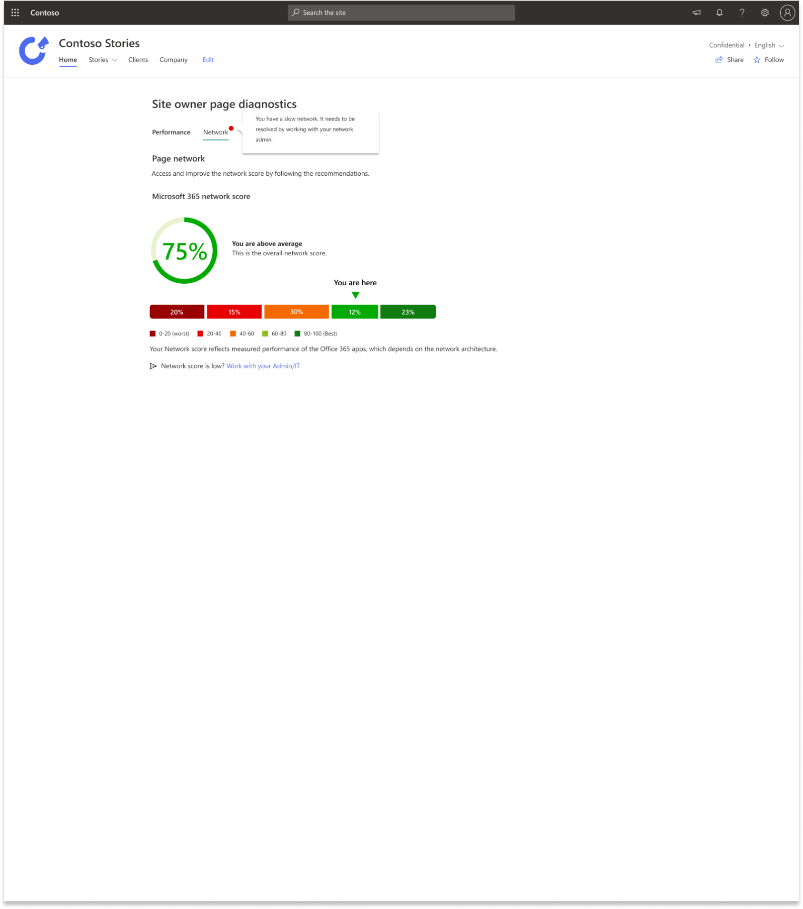
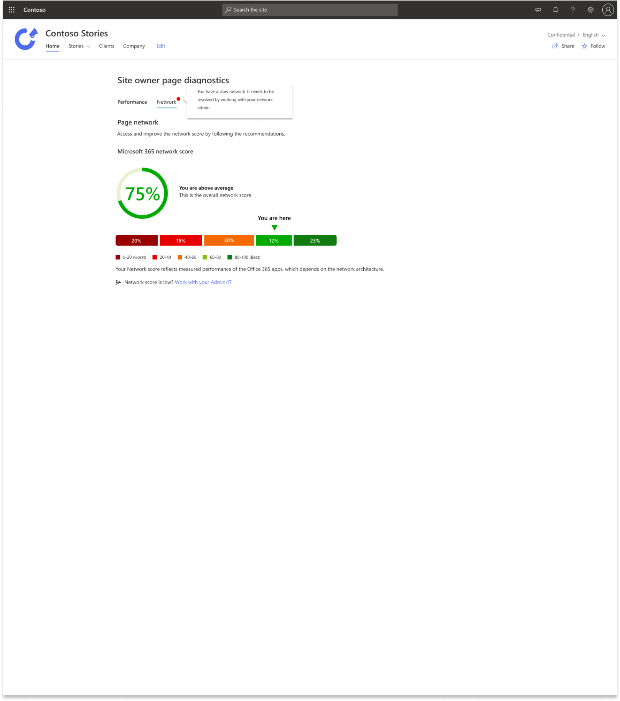

The main goal of this project is to show to owners of the websites what their home page performance is being impacted by. This tool is very helpful to drive the conversation of owners with admins to enable CDN and review their network. This tool will improve site performance by showing the list of recommendations to site owners. And allowing users to access the network score in one or in multiple locations.
Microsoft is currently receiving too many phone calls with service incidents concerns which might be caused by poor site design.
The solution is to lower the number service incidents phone calls to Microsoft by creating the site performance tool for site owners.
The target audience are portal admins and end users who need to check the site performance and resolve the problems easily.
 
